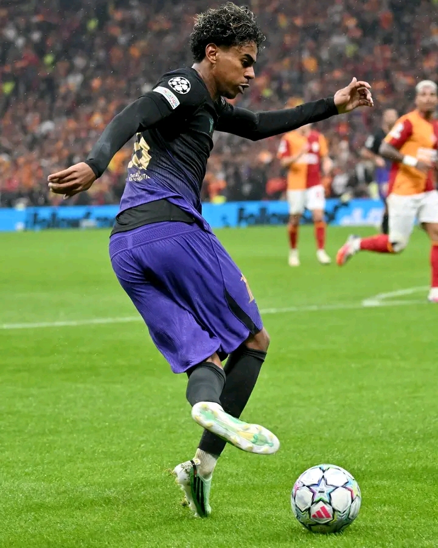

Lamine Yamal is a Barcelona right-winger born on 13th July 2007, left-footed, La Masia-raised, plays like a veteran at just 19. He debuted for Barca at 15, lit up Euro 2024 with Spain at 16, and has not looked back since.
He was Barcelona's top-scorer and LaLiga player of the Season in 2025/26, now wearing the No.10. This season in La-Liga he already has 8 goals and 6 assists in 741 minnutes, averaging an 8.68 rating, one of the highest for any winger in Europe.
His gae is simple to describe, impossible to defend. He stays wide, invites the full-back, drops his shoulder, and either goes outside for the cross or cuts inside on that left foot for a curling shot or a killer through ball.
You can find him out below.
